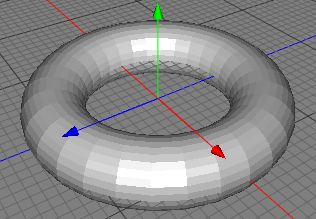

トーラスオブジェクト
トーラスオブジェクトは、より進んだ形状を作成できるパワフルで複雑なパラメトリックポリゴンオブジェクトです。基本的なトーラスは、下にあるように、ループ状に回転して押し出して作られたリングの形です。

N1 と N2 プロパティを変える事によって（下記参照）、トーラスの形が大きく変化します。一番左上のものは、N1 と N2 が 1 未満、中央のものは、N1 と N2 が 1。右下の角にあるものは、N1 と N2 が 1 より上に設定されています。N1 と N2 を 0 から 2 の範囲以外に設定することによって、不思議な形状を生成する事もできます。（例えば、負の数など。）（訳注：負の数は設定できません、正の数で試してみてください。）

プロパティ
- リングの分割数: トーラスのメインのリングを構成する分割数を設定します。高い値は、より滑らかなリングを生成します。
- チューブの分割数: トーラスのリングを構成する輪の分割数を設定します。高い値は、より滑らかなチューブを生成します。
- リング半径: メインリングの半径
- チューブ半径: リングを構成するチューブの半径
- N1: メインリングの正方形度合いを定義します。0 に近づく正の数ほど、より正方形になります。1 の場合、完全な円の形になり、1 より大きい場合、リングは内側にカーブします。
- N2: リングを構成するチューブの正方形度合いを定義します。この値は、チューブの形状について N1 と同じように働きます。